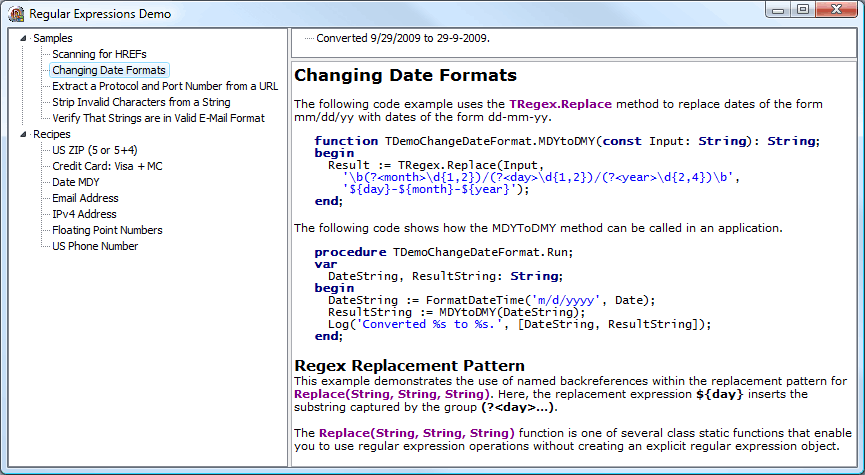

This library emulates the .Net classes in the System.Text.RegularExpressions namespace (http://msdn.microsoft.com/en-us/library/system.text.regularexpressions.aspx).
It uses PCRE (Perl Compatible Regular Expressions) as the backend to perform the regular expression matching (see http://www.pcre.org). The library does not depend on a DLL so you do not have to deploy any additional DLLs with your application. All PCRE functionality is linked into the application using object files.
For more information about the .Net regular expression syntax, take a look at http://msdn.microsoft.com/en-us/library/hs600312.aspx.
Note: this library only works with Delphi 2009 and later because of its use of generics and Unicode support.
This version uses interfaces like IRegex and IMatch etc. that provide almost the same functionality as the classes Regex and Match etc. in the .Net framework.
The most common use is to create an IRegex object (as implemented by TRegex) and use its methods to search for regular expression matches or replace text:
procedure Test;
var
Regex: IRegex;
begin
Regex := TRegex.Create('^([0-9a-zA-Z]([-\.\w]*[0-9a-zA-Z])*@([0-9a-zA-Z][-\w]*[0-9a-zA-Z]\.)+[a-zA-Z]{2,9})$');
if (Regex.IsMatch('foo@bar.com')) then
ShowMessage('Valid email address')
else
ShowMessage('Invalid email address');
end;The example above tests the validity of an email address using a regular expression. Note that you always assign the regular expression object to a variable of type IRegex (and not of type TRegex). This gives you the advantage of automatic memory management so you don't have the free the object.
Like the .Net version, the TRegex class also supports some static class methods. When you use these methods, the compiled regular expression gets cached. So the next time you use the same regular expression, the precompiled version will be used. For more information about caching regular expression, see the MSDN library documentation for the System.Text.RegularExpressions namespace.
The example above can be rewritten to use caching like this:
procedure Test;
begin
if TRegex.IsMatch('foo@bar.com', '^([0-9a-zA-Z]([-\.\w]*[0-9a-zA-Z])*@([0-9a-zA-Z][-\w]*[0-9a-zA-Z]\.)+[a-zA-Z]{2,9})$') then
ShowMessage('Valid email address')
else
ShowMessage('Invalid email address');
end;
The following classes/interfaces, properties and methods are supported:
It also offers the following methods and options that are not part of the .Net version:
Note: This engine differs in the .Net version when it comes to character indices. Delphi strings start at index 1 and .Net strings start at index 0.
This engine uses 1-based indices and offsets, since these are natural for Delphi strings. You may need to take this into account when translating .Net code over to Delphi.
The following methods and properties are not supported in the library (mostly because the PCRE backend does not support these or because they don't make sense in Win32):
Similarly, there are no equivalents for the following .Net classes:
Since PCRE is used as a backend, only PCRE-compatible regex syntax is supported. Fortunately, the vast majority of the .Net regex syntax is compatible with PCRE.
Exceptions include:
The library consists of the following directories:
This is the directory you want to include in your own project. It contains the units "pcre.pas" and and "RegularExpressions.pas". In your projects, you will only use the unit "RegularExpressions", with contains the classes and interfaces discussed above. The "pcre" unit is used internally and links in the PCRE object files.
You only need this directory when you need to build the PCRE object files yourself (for example, when there is a new version of PCRE). See the Readme.txt file in this directory for details on how to do that.
This library comes with pre-made versions of the PCRE objects files, so you generally do not need to build them yourself.
This directory contains about a 1000 unit tests to test the correctness of the library. Most of these unit tests are converted from the Mono implementation of the System.Text.RegularExpressions namespace (see http://www.mono-project.com). Note that only those unit tests are included that test the supported functionality in this library. For example, all Mono unit tests that test the right-to-left matching are excluded.
The library should pass all unit tests.
Contains this readme.
Contains a sample application that shows how to use this library. The demo shows the examples that are included in the .Net Framework SDK, as well as some recipes for commonly used regular expressions. The recipes are taken from RegExLib.com.
